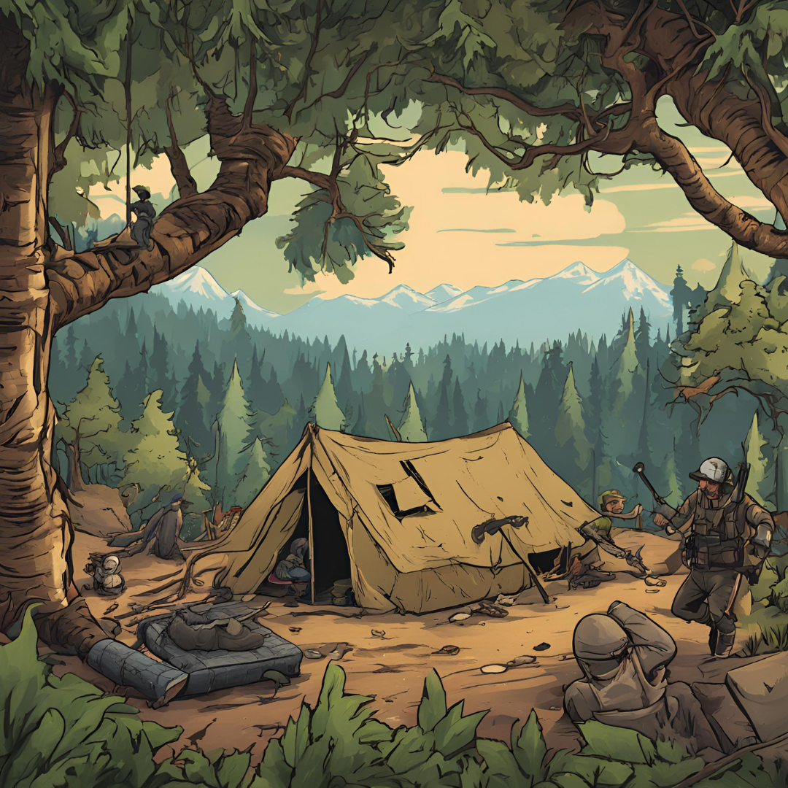
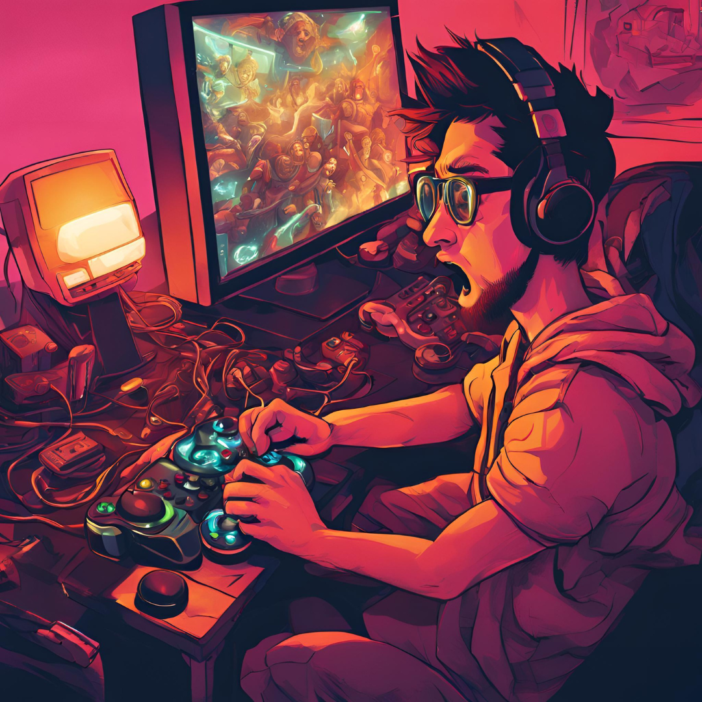

Jugar bien a los videojuegos de supervivencia requiere un enfoque estratégico y adaptativo, ya que estos juegos suelen combinar gestión de recursos, exploración y enfrentamientos con enemigos o desafíos ambientales. Lo primero es familiarizarte con el entorno y las mecánicas del juego. Dedica un tiempo inicial a explorar sin prisas, identificando fuentes clave de recursos como alimentos, agua o materiales de construcción. Este conocimiento temprano te dará una ventaja significativa, ya que sabrás dónde acudir en momentos críticos. Mantén siempre un equilibrio entre explorar y protegerte. Avanzar demasiado rápido puede exponerte a peligros para los que no estás preparado, mientras que jugar demasiado conservador puede limitar tu progreso. Prioriza mejorar tus herramientas y equipo, ya que suelen ser la clave para superar desafíos más complejos. La gestión de recursos es esencial. Intenta recolectar más de lo que consumes, pero evita acumular tanto que olvides usarlos en mejoras útiles o para sobrevivir a emergencias. Además, presta atención a las mecánicas de salud o resistencia: comer y descansar regularmente no solo son necesarios, sino que también pueden influir en tu efectividad en combate o exploración. En los enfrentamientos, evita el enfrentamiento directo si el juego lo permite, especialmente contra enemigos que no conoces bien. Aprende los patrones de tus adversarios y utiliza el entorno a tu favor. Cuando no estés seguro de algo, la paciencia es tu mejor aliada: observar y planificar te ahorrará muchos problemas. Por último, mantén una mentalidad de aprendizaje. Cada error en los juegos de supervivencia es una lección valiosa. Si algo sale mal, reflexiona sobre lo que podrías haber hecho de manera diferente y adáptate para la próxima vez. Esto te ayudará a dominar los retos del juego y disfrutar plenamente de la experiencia.
Ganar partidas en juegos competitivos requiere una combinación de habilidad, estrategia y mentalidad adecuada. Cada partida es una oportunidad para mejorar, por lo que debes enfocarte en aprender tanto como en ganar. Comienza por conocer profundamente el juego y dominar los aspectos básicos, como los controles, las mecánicas principales y las características de los personajes, armas o habilidades disponibles. Este conocimiento te permitirá reaccionar mejor en situaciones críticas y tomar decisiones acertadas en el momento adecuado. La comunicación y el trabajo en equipo son esenciales en la mayoría de los juegos competitivos. Incluso si juegas con personas aleatorias, intenta mantener una actitud positiva y aportar ideas claras y útiles. Coordinarte con tus compañeros te dará ventaja sobre rivales que jueguen de forma desorganizada. Mantén siempre la calma y evalúa la situación antes de actuar. Impulsarte por la adrenalina puede llevarte a cometer errores, como exponerte innecesariamente o malgastar recursos. Observa el comportamiento de tus oponentes y adáptate a sus estrategias, ya sea contrarrestando sus movimientos o buscando oportunidades para sorprenderlos. La consistencia es clave. Dedica tiempo a practicar regularmente, centrándote en mejorar tus debilidades sin descuidar tus fortalezas. Estudia tus partidas, tanto las victorias como las derrotas, para identificar patrones y áreas de mejora. Además, asegúrate de mantener un equilibrio saludable entre juego y descanso, ya que la fatiga mental puede afectar tu rendimiento. Por último, mantén una actitud de crecimiento. No te frustres por las derrotas, ya que forman parte del aprendizaje. Enfócate en tu progreso personal y celebra las pequeñas mejoras; esta mentalidad te ayudará no solo a ganar más partidas, sino también a disfrutar del proceso competitivo.
Superar los niveles más difíciles de un videojuego requiere paciencia, análisis y habilidad. Lo primero es entender que estos desafíos están diseñados para poner a prueba tus capacidades, por lo que debes abordar cada intento con la mentalidad de aprender más que de simplemente superar el nivel. Dedica tiempo a observar y analizar. Si el nivel incluye enemigos, presta atención a sus patrones de ataque o movimiento; si se trata de un rompecabezas, identifica las pistas o elementos interactivos. Esto te permitirá anticiparte a los obstáculos en lugar de reaccionar improvisadamente. La repetición es tu aliada: cada intento fallido te proporciona información valiosa que puedes usar para ajustar tu estrategia. Optimiza tus recursos y habilidades. Asegúrate de usar todas las herramientas que el juego te ofrece, ya sean habilidades especiales, objetos consumibles o mejoras que puedas desbloquear. En niveles difíciles, aprovechar cada ventaja puede marcar la diferencia entre el éxito y el fracaso. No tengas miedo de experimentar con diferentes enfoques; a veces, salir de tu zona de confort puede revelar soluciones inesperadas. Mantén la calma y evita la frustración. Los niveles desafiantes pueden ser agotadores, pero perder la paciencia solo te hará cometer más errores. Si sientes que te estás estancando, toma un descanso y regresa con una mente fresca; muchas veces, un nuevo enfoque o perspectiva puede ayudarte a superar el obstáculo. Finalmente, no dudes en buscar inspiración si el nivel parece imposible. Revisar guías, tutoriales o consejos de otros jugadores no le quita mérito a tu logro, sino que te proporciona las herramientas necesarias para triunfar. Lo importante es seguir adelante y disfrutar el reto, recordando que superar estos niveles es parte de lo que hace a los videojuegos tan gratificantes.
Configurar correctamente tus juegos es esencial para disfrutar de una experiencia óptima y adaptada a tus preferencias y equipo. El primer paso es asegurarte de que el hardware de tu dispositivo cumple con los requisitos recomendados del juego, ya que esto garantizará un rendimiento fluido y sin interrupciones. Dentro del juego, ajusta la resolución a la nativa de tu pantalla para obtener una imagen clara y nítida. Si tu equipo no puede manejarlo cómodamente, considera bajar la resolución o disminuir la calidad gráfica de elementos como sombras, texturas o efectos especiales. Prioriza un equilibrio entre calidad visual y rendimiento: los cuadros por segundo (FPS) estables son más importantes que los gráficos ultrarrealistas en la mayoría de los casos. Configura los controles según tu comodidad. Si usas teclado y ratón, personaliza las teclas para que se ajusten a tus reflejos y estilo de juego. En el caso de los mandos, ajusta la sensibilidad del stick o de los botones para mayor precisión. Aprovecha también las opciones de accesibilidad si están disponibles, como ajustes de contraste, subtítulos o asistencia visual. El sonido es otro aspecto clave. Ajusta el volumen de los efectos, la música y las voces para que estén equilibrados, permitiéndote escuchar detalles importantes sin saturarte. Si juegas de forma competitiva, considera usar auriculares para captar mejor los sonidos direccionales. Por último, guarda tu configuración. Muchos juegos permiten crear perfiles personalizados, lo que resulta útil si compartes el juego con otras personas o si deseas probar diferentes ajustes. Configurar correctamente tus juegos puede parecer tedioso al principio, pero mejora significativamente tu experiencia y te permite disfrutar al máximo del mundo virtual.
